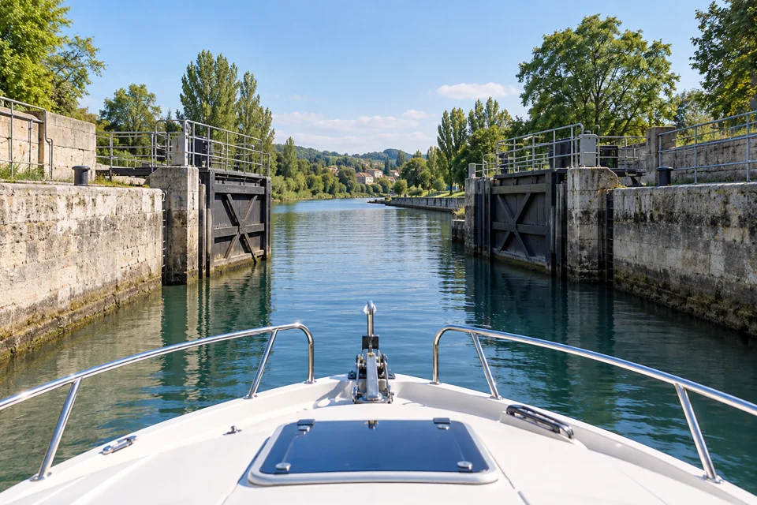
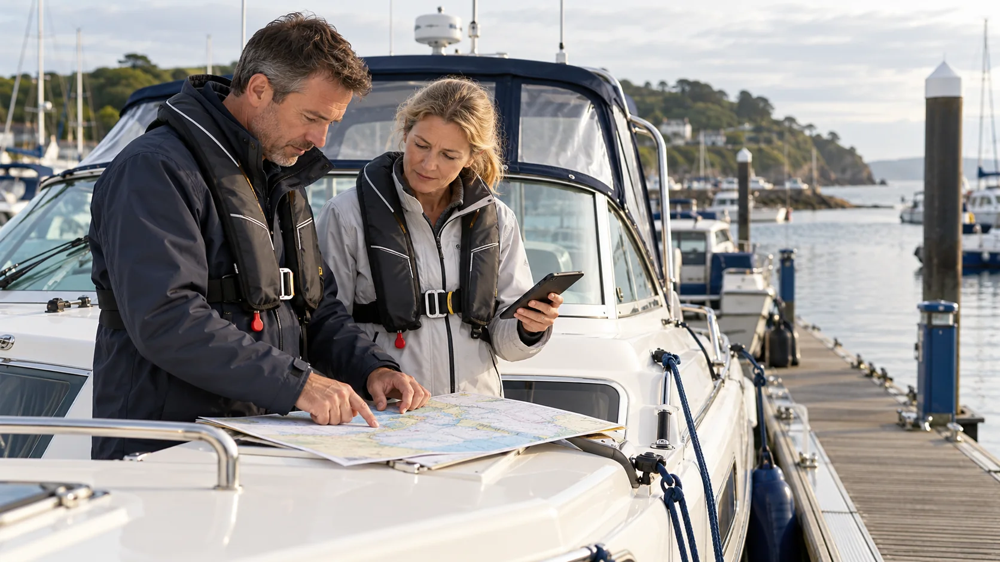
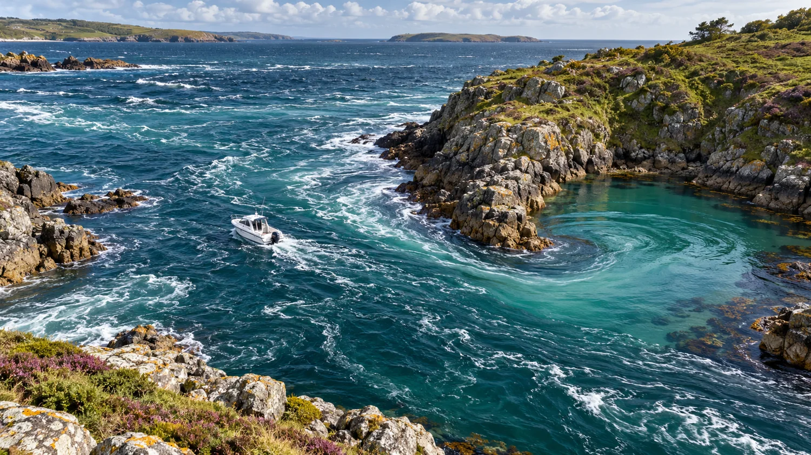
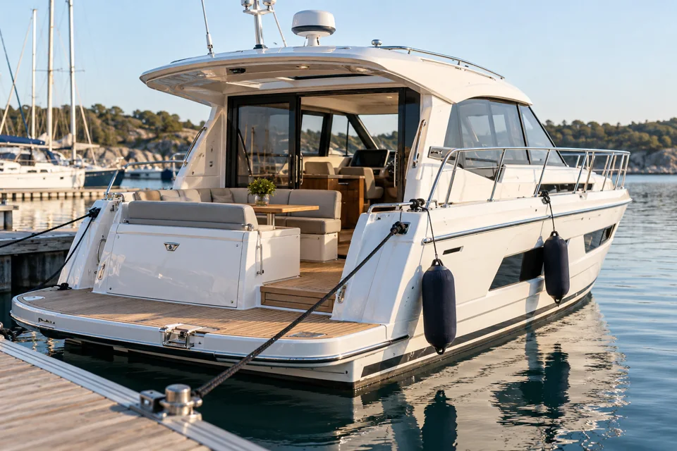
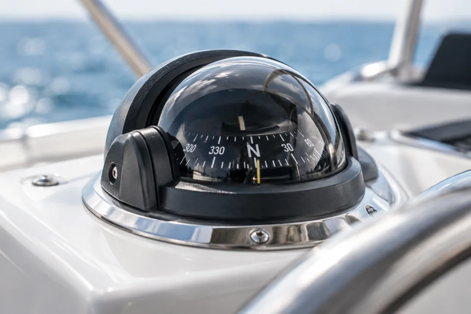
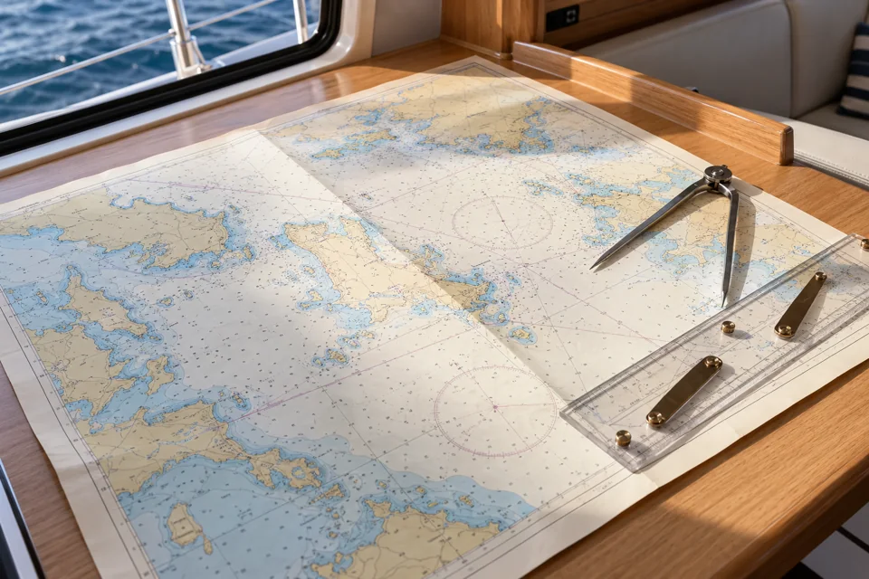
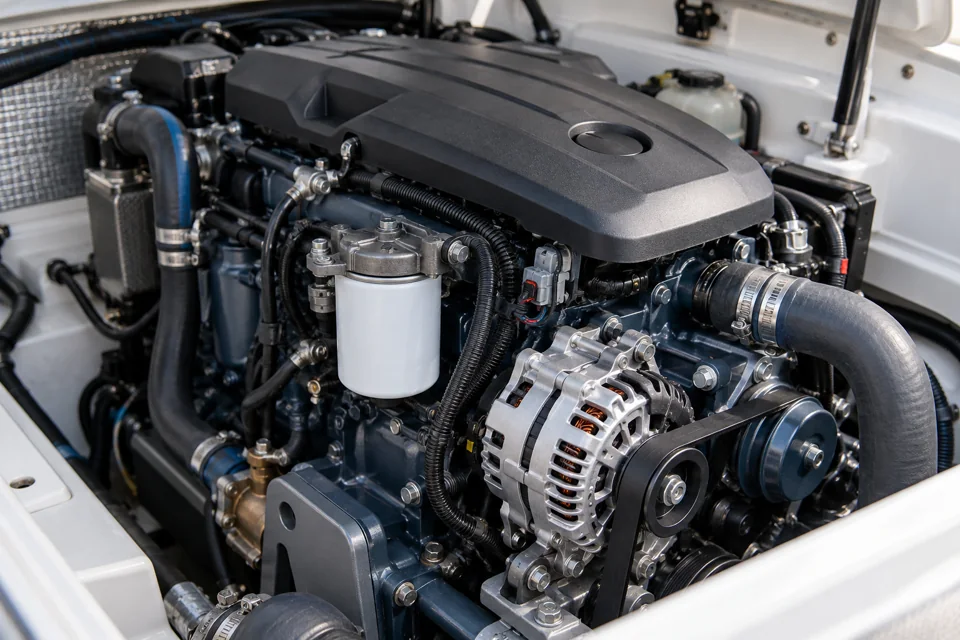

Rules & navigation
Bridge Watchkeeping
Eight stages covering COLREGs, recognition, collision avoidance, buoyage, traffic separation and AIS.
Helmlore helps recreational boaters learn navigation, seamanship and boat knowledge through clear visual lessons, practical scenarios and knowledge checks.
Helmlore is an online boating learning platform for people who want to understand the rules, prepare their boat and crew, and build confidence on the water.
Follow a course or revisit a subject. Create a free account to save your learning progress and vessel details, then choose a training vessel or add your own boat.
Create your free account →Guided learning, visual explanations and practice across coastal and inland boating.
Eight stages covering COLREGs, recognition, collision avoidance, buoyage, traffic separation and AIS.

Nine modules covering inland rules, signs, signals and practical situations, with a separate mock assessment.

Six visual lessons on preparing, spotting hazards, protecting the crew and responding when plans change.

Eight visual lessons and practical workshops for tidal depth, stream and passage timing.

Eight visual lessons on loading, watertight integrity, propulsion, fuel, electrical power and steering.

Start with four visual steps on the compass circle, heading, bearings and ground track. Then explore eight detailed lessons.

Read realistic training charts, plot positions, take visual fixes, build DR and EP, and cross-check GPS.

Build a sensible passage plan, prepare alternatives, monitor the journey and keep a useful navigation log.

Learn the engine cycle, checks, filters, diesel bug, cooling, servicing and sensible fault finding through visual lessons.
Keep your vessel details and course progress together.
Start with the basics or revisit a skill you want to practise.
Work through lessons, recognition tools, scenarios and assessments.
Yes. The training courses are free to access with a Helmlore account.
Helmlore provides independent recreational learning and practice. It does not award an RYA or MCA qualification or replace recognised practical training.
You can open the training in your web browser on an iPad, phone or computer. Sign in to continue with your saved learning progress.
Email Helmlore.com@gmail.com with questions or feedback.